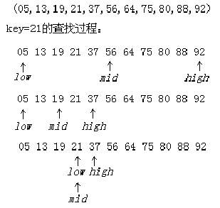
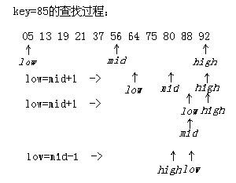
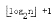

第三十课
本课主题： 静态查找表（二）有序表的查找
教学目的： 掌握有序表的折半查找法
教学重点： 折半查找
教学难点： 折半查找
授课内容：
一、折半查找的查找过程
以有序表表示静态查找表时，Search函数可用折半查找来实现。
先确定待查记录所在的范围（区间），然后逐步缩小范围直到找到或找不到该记录为止。


二、折半查找的查找实现
int Search_Bin(SSTable ST,KeyType key){
low=1;high=ST.length;
while(low<=high){
mid=(low+high)/2;
if EQ(key,ST.elem[mid].key) return mid;
else if LT(key,ST.elem[mid].key) high=mid -1;
else low=mid +1 ;
}
return 0;
}//Search_Bin;
三、折半查找的性能分析
折半查找在查找成功时和给定值进行比较的关键字个数至多为
